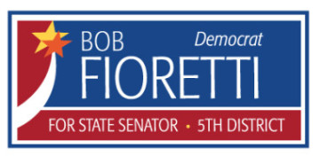

I am a high school student with a deep interest in STEM. I am a proficient coder and capable of quickly learning new programming concepts. I am also a varsity track & cross country athlete and the Treasurer of our school’s nationally-ranked Model UN team.
Work
In the summer of 2016, I worked as a summer intern at the University of Chicago's Institute of Molecular Engineering. I designed and built a machine from scratch to biaxially stretch polymer films at the micron scale. I am also employed as a programmer for Carbonless Community, a Chicago-based organization, where I do web design and program support for an online reverse-auction platform.
Education
I have attended the University of Chicago Laboratory High School, in Hyde Park, Chicago, from 2003-present. The Laboratory Schools is widely considered to be one of the top private day schools in the country. My education has taught me how to think critically and find innovative solutions to difficult problems.
Community Service
In 2015-2016, I volunteered at Robert Fioretti's campaign for Illinois State Senate, 5th District. I gave my time for Mr. Fioretti because I felt that, if elected, he could have helped the people of the 5th District far more than the incumbent senator. Although he lost the primary, my time on the campaign exposed me to a diverse group of people and neighborhoods that I never knew existed in my city.
